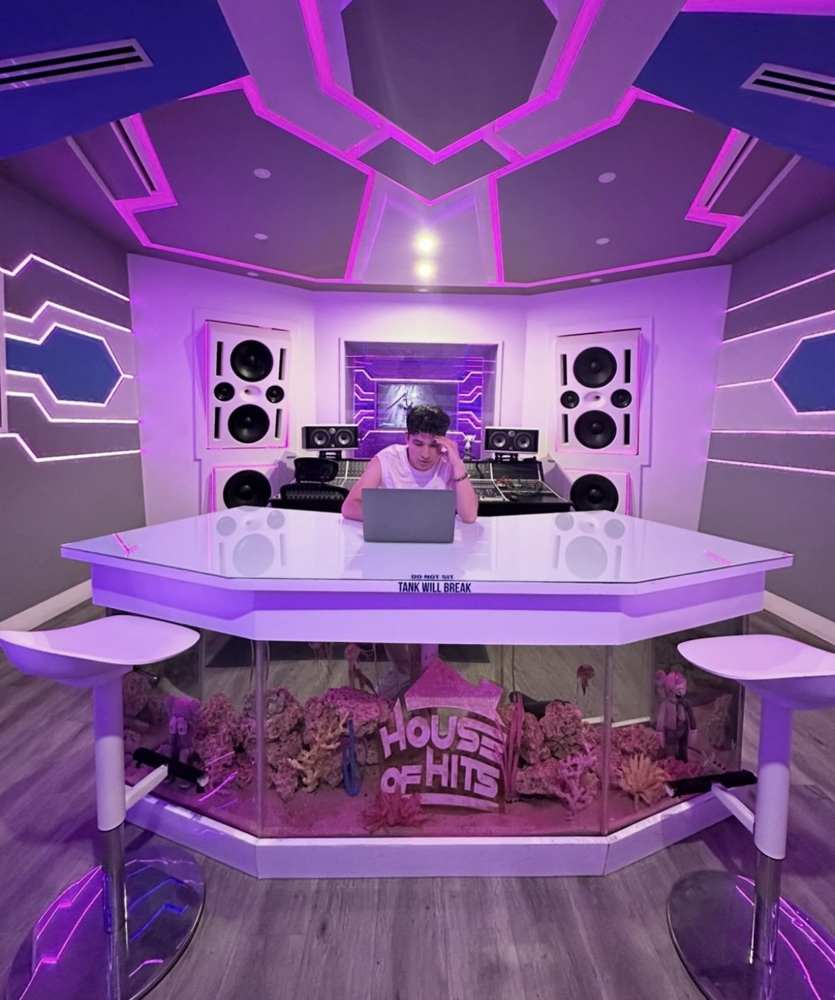
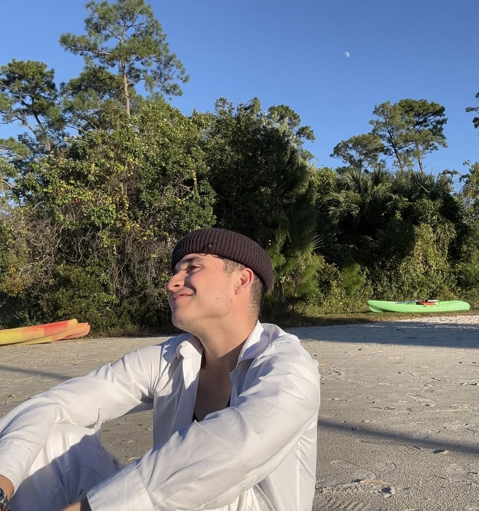
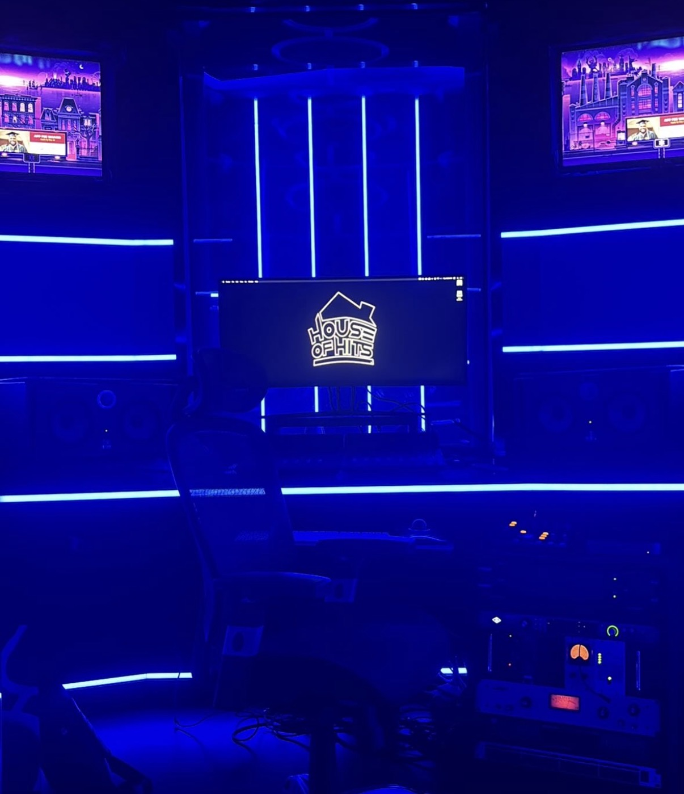
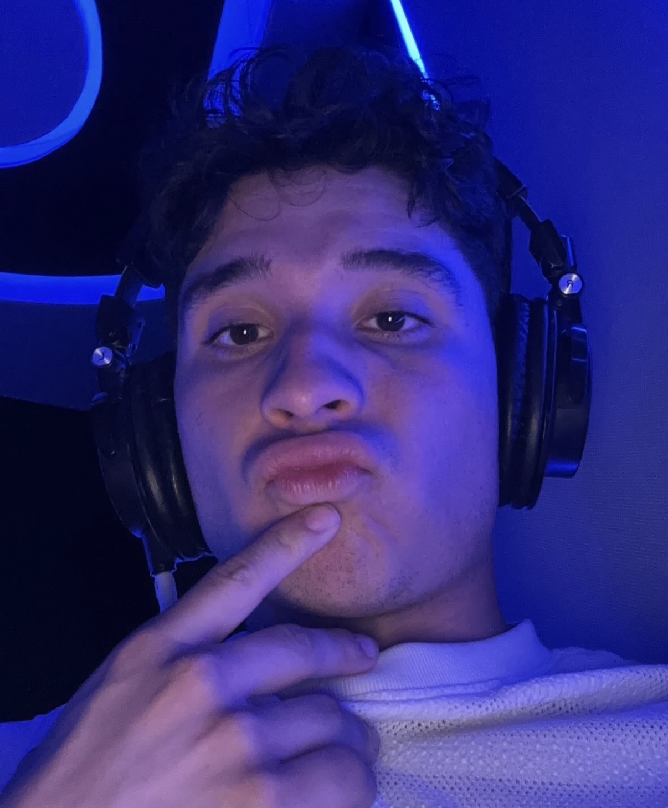

De Colombia para el mundo
Estevan Reyez
Latin urban pop y reggaeton con melodía, movimiento y una energía de noche azul.
Latin urban pop / reggaeton
Melodías hechas para la noche, la ciudad y el movimiento.
Estevan Reyez es un artista colombiano que crea un sonido donde se mezclan el ritmo del reggaeton, melodías de latin pop y una vibra urbana moderna. Su música se mueve entre el romance, la confianza y las ganas de llegar a un escenario más grande.

Origen artístico
Voz colombiana, camino global.
Sonando fuera de fronteras
Escuchado en México, Canadá, USA, Colombia, Argentina y Chile.
México
Canadá
USA
Colombia
Argentina
Chile

En el estudio
Coros brillantes, románticos y listos para el club.
Desde voces íntimas hasta una energía de perreo limpia, el enfoque es claro: canciones que se sienten personales en audífonos y poderosas cuando la sala se enciende.
Fotos
Momentos del camino, el estudio y el escenario.





Contrataciones / colaboraciones
Para música, visuales y momentos en vivo.
Estevan Reyez está construyendo el próximo capítulo del latin urban pop desde Colombia hacia el mundo.